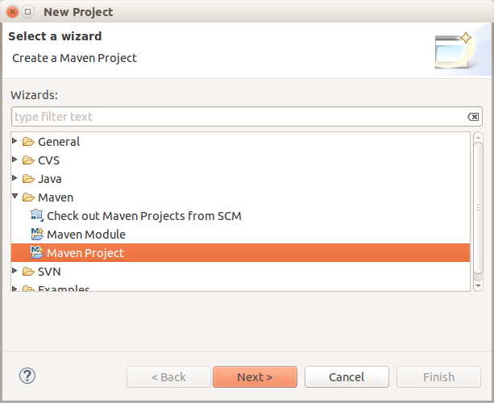
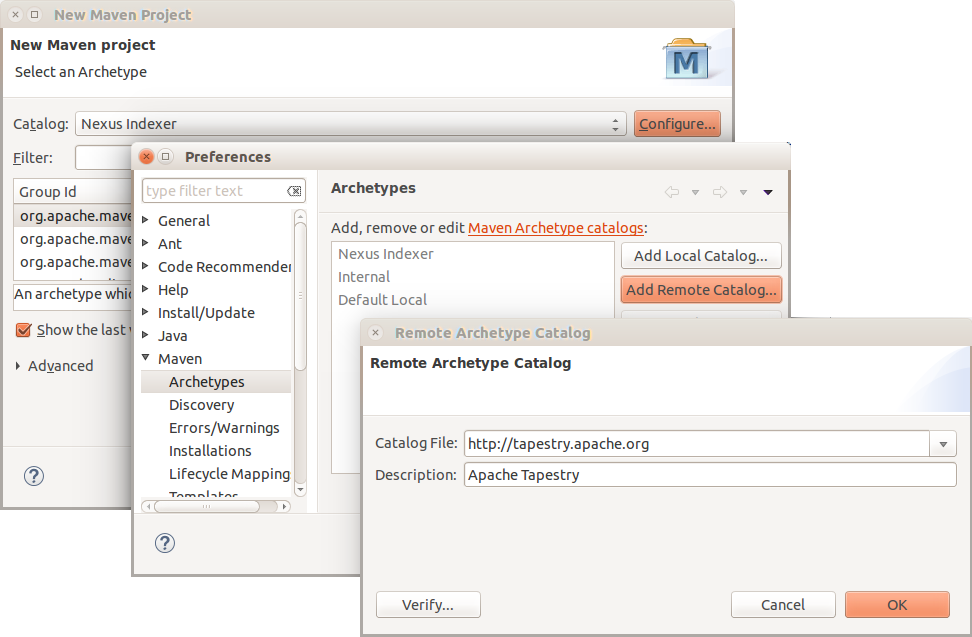
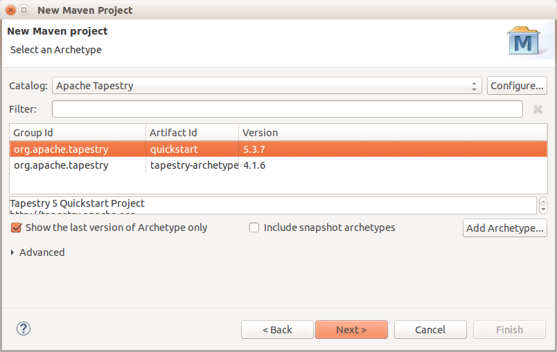
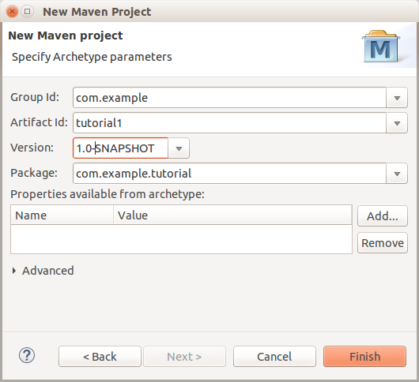
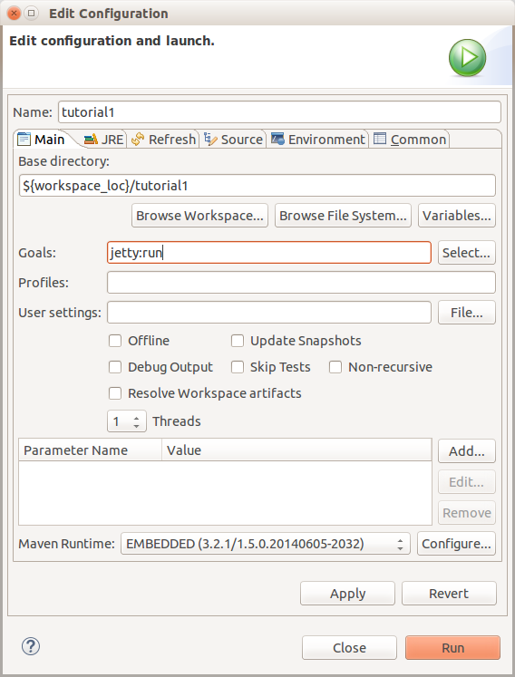
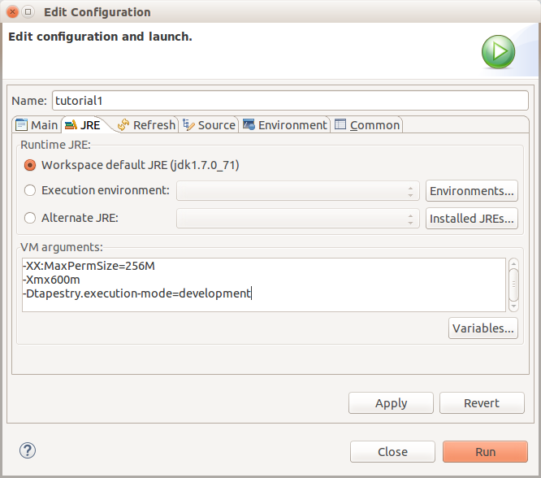
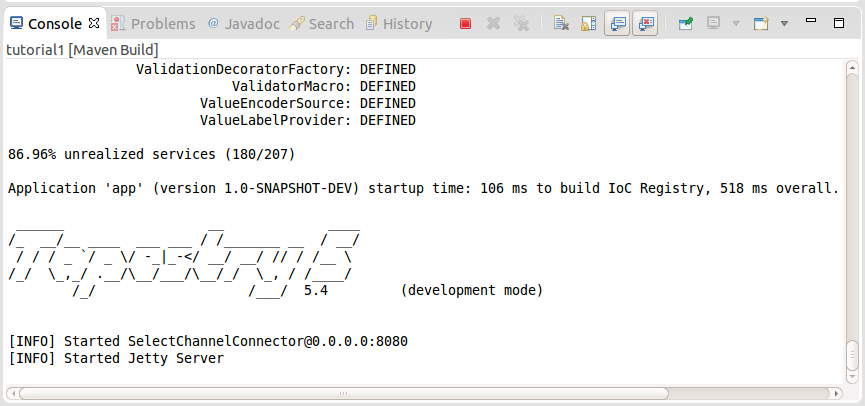
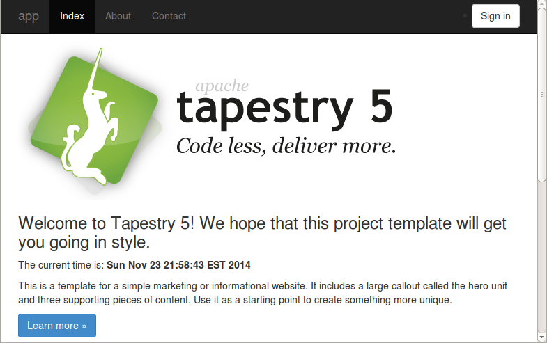

Creating the Skeleton Application
First, let’s create an empty application. Tapestry provides a Maven archetype (a project template) to make this easy.
For the tutorial, we’re using a fresh install of Eclipse and an empty workspace at /users/joeuser/workspace.
You may need to adjust a few things for other operating systems or local paths.
Using the Quickstart Archetype
From Eclipse, we’ll use a Maven archetype to create a skeleton Tapestry project.
Maven Behind a Firewall
If you are behind a firewall/proxy, before performing any Maven downloads, you may need to configure your proxy settings in your Maven settings.xml file (typically in the .m2 subdirectory of your home directory, ~/.m2 or C:\users\joeuser\.m2).
Here is an example (but check with your network administrator for the names and numbers you should use here).
<settings>
<proxies>
<proxy>
<active>true</active>
<protocol>http</protocol>
<host>myProxyServer.com</host>
<port>3128</port>
<username>joeuser</username>
<password>myPassword</password>
<nonProxyHosts></nonProxyHosts>
</proxy>
</proxies>
<localRepository>C:/Users/joeuser/.m2/repository</localRepository> (1)
</settings>| 1 | Of course, adjust the localRepository element to match the correct path for your computer. |
Create Project
Okay, let’s get started creating our new project.
|
The instructions below use Eclipse’s New Project wizard to create the project from a Maven archetype.
If you’d rather use the |
In Eclipse, go to

Then click Next, Next (again), and then on the "Select an Archetype" page click the Configure button on the "Catalog" line. The "Archetype" preferences dialog should appear. Click the Add Remote Catalog… button, as shown below:

As shown above, enter http://tapestry.apache.org in the "Catalog File" field, and "Apache Tapestry" in the Description field.
Click OK, then OK again.
On the "Select an Archetype" dialog (shown below), select the newly-added Apache Tapestry catalog, then select the "quickstart" artifact from the list and click Next.

| Screenshots in this tutorial may show different (either newer or older) versions of Tapestry than you may see. |
Fill in the Group Id, Artifact Id, Version and Package as follows:

then click Finish.
|
The first time you use Maven, project creation may take a while as Maven downloads a large number of JAR dependencies for Maven, Jetty and Tapestry. These downloaded files are cached locally and will not need to be downloaded again, but you do have to be patient on first use. |
After Maven finishes, you’ll see a new directory, tutorial1, in your Package Explorer view in Eclipse.
Running the Application using Jetty
One of the first things you can do is use Maven to run Jetty directly.
Right-click on the tutorial1 project in your Package Explorer view and select , enter a Goal of jetty:run.
This creates a "Run Configuration" named "tutorial1" that we’ll use throughout this tutorial to start the app:

Tapestry runs best with a couple of additional options; click the "JRE" tab and enter the following VM Arguments:
-Xmx600m
-Dtapestry.execution-mode=development

Finally, click Run.
Again, the first time, there’s a dizzying number of downloads, but before you know it, the Jetty servlet container is up and running.

Note the red square icon above. Later on you’ll use that icon to stop Jetty before restarting the app.
You can now open a web browser to http://localhost:8080/tutorial1/ to see the running application:

| Your screen may look very different depending on the version of Tapestry you are using! |
The date and time in the middle of the page shows that this is a live application.
This is a complete little web app. It doesn’t do much, but it demonstrate how to create a number of pages sharing a common layout, and demonstrates some simple navigation and link handling. You can see that it has several different pages that share a common layout. (Layout is a loose term meaning common look and feel and navigation across many or all of the pages of an application. Often an application will include a Layout component to provide that commonness.)
Next: Exploring the Project